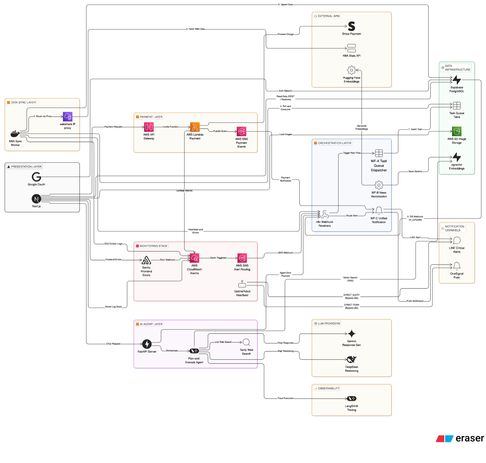

<!doctype html>
<html lang="en">

<head>
  <meta charset="UTF-8"/>
  <meta name="viewport" content="width=device-width, initial-scale=1.0"/>
  <title>Yang Liu - Resume</title>
  <style>
    :root {
      --primary-color: #333;
      --secondary-color: #666;
      --accent-color: #666700;
      --border-color: #ddd;
      --bg-light: #f8f9fa;
      --bg-dark: #232f3e;

      --font-size-name: 20px;
      --font-size-section: 13px;
      --font-size-title: 11px;
      --font-size-normal: 10px;
      --font-size-small: 9px;
      --font-size-tiny: 8px;

      --spacing-section: 14px;
      --spacing-item: 3px;
    }

    @page {
      size: A4;
      margin: 0;
    }

    body {
      font-family: Arial, sans-serif;
      margin: 0;
      padding: 0;
      color: var(--primary-color);
      background-color: #f9f9f9;
      -webkit-print-color-adjust: exact !important;
      print-color-adjust: exact !important;
    }

    .resume-container {
      width: 210mm;
      min-height: 297mm;
      max-height: 297mm;
      margin: 0 auto;
      background-color: white;
      padding: 15mm;
      box-sizing: border-box;
      overflow: hidden;
    }

    .resume-container + .resume-container {
      margin-top: 20px;
    }

    .header {
      display: flex;
      align-items: center;
      margin-bottom: var(--spacing-section);
    }

    .profile-img {
      width: 100px;
      height: 140px;
      margin-right: 20px;
      border-radius: 4px;
      overflow: hidden;
      flex-shrink: 0;
    }

    .profile-img img {
      width: 100%;
      height: 100%;
      object-fit: cover;
    }

    .header-text h1 {
      font-size: var(--font-size-name);
      margin: 0 0 4px 0;
    }

    .header-title {
      font-size: var(--font-size-title);
      color: var(--secondary-color);
      margin-bottom: 6px;
      font-weight: 500;
    }

    .key-points {
      display: flex;
      gap: 6px;
      margin-bottom: 8px;
      flex-wrap: wrap;
    }

    .key-point {
      font-size: var(--font-size-tiny);
      padding: 2px 8px;
      background: var(--bg-dark);
      color: white;
      border-radius: 10px;
      font-weight: 500;
    }

    .header-text p {
      margin: 3px 0;
      line-height: 1.3;
      font-size: var(--font-size-small);
    }

    .main-content {
      display: flex;
      margin-top: 10px;
    }

    .left-column {
      width: 30%;
      padding-right: 15px;
    }

    .left-column > div + div {
      margin-top: 14px;
    }

    .right-column {
      width: 70%;
      border-left: 1px solid var(--border-color);
      padding-left: 15px;
    }

    .right-column > div + div {
      margin-top: 14px;
    }

    .section-title {
      font-size: 9px;
      font-weight: 700;
      text-transform: uppercase;
      margin-top: var(--spacing-section);
      margin-bottom: var(--spacing-item);
      padding: 3px 0 3px 8px;
      border-left: 3px solid var(--bg-dark);
      border-bottom: none;
      color: var(--bg-dark);
    }

    .section-title:first-child {
      margin-top: 0;
    }

    .contact-item {
      display: flex;
      align-items: center;
      margin-bottom: 3px;
      font-size: var(--font-size-normal);
    }

    .contact-icon {
      width: 15px;
      margin-right: 8px;
      text-align: center;
    }

    .skill-item {
      margin-bottom: 3px;
    }

    .skill-name {
      font-size: var(--font-size-normal);
      margin-bottom: 3px;
    }

    .skill-bar {
      display: flex;
      gap: 2px;
    }

    .skill-dot {
      width: 10px;
      height: 6px;
      border: 1px solid #999;
    }

    .skill-dot.filled {
      background-color: #999;
    }

    .language-item {
      font-size: var(--font-size-normal);
      margin: 3px 0;
    }

    .cert-list {
      list-style: none;
      padding: 0;
      margin: 3px 0 0 0;
    }

    .cert-item {
      display: flex;
      align-items: center;
      margin-bottom: 4px;
      padding: 4px 6px;
      background: var(--bg-light);
      border-radius: 4px;
      border-left: 3px solid #e0e0e0;
    }

    .cert-icon {
      width: 28px;
      height: 28px;
      margin-right: 8px;
      flex-shrink: 0;
    }

    .cert-icon img {
      width: 100%;
      height: 100%;
      object-fit: contain;
    }

    .cert-name {
      font-size: var(--font-size-small);
      font-weight: 600;
      color: var(--bg-dark);
    }

    .cert-date {
      font-size: var(--font-size-tiny);
      color: var(--secondary-color);
    }

    .aws-services {
      display: flex;
      flex-wrap: wrap;
      gap: 3px;
      margin-top: 3px;
    }

    .aws-service-tag {
      font-size: 7px;
      padding: 2px 5px;
      background: #ff9900;
      color: white;
      border-radius: 2px;
      font-weight: 600;
    }

    .featured-project {
      padding: 8px 10px;
      background: var(--bg-light);
      border-radius: 4px;
      border-left: 3px solid #e0e0e0;
      margin-top: 4px;
    }

    .featured-project-name {
      font-size: var(--font-size-normal);
      font-weight: bold;
      margin-bottom: 4px;
    }

    .featured-project-desc {
      font-size: var(--font-size-small);
      line-height: 1.5;
      color: var(--primary-color);
      margin-bottom: 4px;
    }

    .featured-project-arch {
      font-size: var(--font-size-tiny);
      color: var(--secondary-color);
      line-height: 1.4;
    }

    .featured-project-purpose {
      font-size: var(--font-size-tiny);
      color: var(--secondary-color);
      margin-bottom: 4px;
      font-style: italic;
    }

    .featured-project-plan {
      font-size: var(--font-size-tiny);
      color: var(--secondary-color);
      margin-top: 3px;
    }

    .featured-project-note {
      font-size: 7px;
      color: var(--secondary-color);
      margin-top: 4px;
      font-style: italic;
    }

    .other-projects-list {
      font-size: var(--font-size-small);
      color: var(--secondary-color);
      line-height: 1.6;
    }

    .strength-item {
      position: relative;
      padding-left: 10px;
      margin: 3px 0;
      font-size: var(--font-size-small);
      line-height: 1.5;
      color: var(--primary-color);
    }

    .strength-item::before {
      content: "▸";
      position: absolute;
      left: 0;
      color: var(--accent-color);
      font-size: 8px;
    }

    .career-summary-item {
      margin-bottom: 10px;
      padding: 8px 10px;
      background: var(--bg-light);
      border-radius: 4px;
      border-left: 3px solid #e0e0e0;
    }

    .career-company-line {
      display: flex;
      justify-content: space-between;
      align-items: center;
      margin-bottom: 6px;
    }

    .career-company-name {
      font-size: var(--font-size-title);
      font-weight: bold;
    }

    .career-company-period {
      font-size: var(--font-size-tiny);
      color: var(--secondary-color);
      background: white;
      padding: 1px 8px;
      border-radius: 10px;
    }

    .career-project-list {
      padding: 0;
      margin: 0;
    }

    .career-project-item {
      padding: 4px 0;
      font-size: var(--font-size-small);
      border-bottom: 1px dotted #e0e0e0;
    }

    .career-project-item:last-child {
      border-bottom: none;
    }

    .career-project-top {
      display: flex;
      align-items: center;
      gap: 8px;
    }

    .career-project-client {
      font-weight: bold;
      min-width: 120px;
      flex-shrink: 0;
    }

    .career-project-role {
      font-size: var(--font-size-tiny);
      padding: 1px 6px;
      background: linear-gradient(135deg, #667eea 0%, #764ba2 100%);
      color: white;
      border-radius: 3px;
      font-weight: 600;
      white-space: nowrap;
    }

    .career-project-period {
      font-size: var(--font-size-tiny);
      color: var(--secondary-color);
      margin-left: auto;
      white-space: nowrap;
    }

    .career-project-desc {
      font-size: var(--font-size-tiny);
      color: var(--secondary-color);
      padding-left: 4px;
      margin-top: 2px;
      line-height: 1.4;
    }

    .personal-project {
      margin-bottom: 5px;
      padding: 2px 0;
    }

    .personal-project-line {
      display: flex;
      align-items: baseline;
      gap: 6px;
      font-size: var(--font-size-small);
    }

    .personal-project-name {
      font-weight: bold;
      color: var(--primary-color);
      flex-shrink: 0;
    }

    .personal-project-desc {
      color: var(--secondary-color);
      font-size: var(--font-size-tiny);
    }

    .personal-project-tech {
      display: flex;
      flex-wrap: wrap;
      gap: 3px;
      margin-top: 2px;
      padding-left: 2px;
    }

    .personal-project-tech .tech-tag {
      font-size: 7px;
      padding: 1px 4px;
      border-radius: 2px;
      background: #e0e0e0;
      color: var(--primary-color);
    }

    .edu-item h3 {
      font-size: var(--font-size-title);
      margin: 0 0 3px 0;
    }

    .edu-item p {
      font-size: var(--font-size-normal);
      margin: 2px 0;
    }

    .page2-header {
      display: flex;
      justify-content: space-between;
      align-items: center;
      padding-bottom: 8px;
      border-bottom: 2px solid var(--bg-dark);
      margin-bottom: 15px;
    }

    .page2-name {
      font-size: var(--font-size-section);
      font-weight: bold;
    }

    .page2-indicator {
      font-size: var(--font-size-tiny);
      color: var(--secondary-color);
    }

    .exp-company {
      font-size: var(--font-size-title);
      font-weight: bold;
      margin: 0 0 3px 0;
      padding-left: 10px;
      border-left: 3px solid var(--bg-dark);
    }

    .project-card {
      margin-bottom: 14px;
      padding: 8px 12px;
      background: linear-gradient(to right, #fafafa, #fff);
      border-radius: 4px;
      border-left: 2px solid #e0e0e0;
    }

    .project-header {
      display: flex;
      justify-content: space-between;
      align-items: center;
      margin-bottom: 5px;
    }

    .project-client {
      font-size: var(--font-size-title);
      font-weight: bold;
      color: var(--primary-color);
    }

    .project-period {
      font-size: var(--font-size-tiny);
      color: var(--secondary-color);
      background: var(--bg-light);
      padding: 1px 6px;
      border-radius: 10px;
    }

    .project-meta {
      display: flex;
      align-items: center;
      gap: 8px;
      margin-bottom: 6px;
      flex-wrap: wrap;
    }

    .role-badge {
      font-size: var(--font-size-tiny);
      padding: 2px 8px;
      background: linear-gradient(135deg, #667eea 0%, #764ba2 100%);
      color: white;
      border-radius: 3px;
      font-weight: 600;
    }

    .team-size {
      font-size: var(--font-size-tiny);
      color: var(--secondary-color);
      border: 1px solid var(--border-color);
      padding: 1px 6px;
      border-radius: 3px;
    }

    .phase-tag {
      font-size: 7px;
      padding: 1px 5px;
      background: #e8eaf6;
      color: #3949ab;
      border-radius: 2px;
      font-weight: 600;
    }

    .project-section {
      margin-bottom: 5px;
    }

    .project-label {
      font-size: var(--font-size-tiny);
      font-weight: bold;
      color: var(--accent-color);
      text-transform: uppercase;
      letter-spacing: 0.5px;
      margin-bottom: 2px;
    }

    .project-content {
      font-size: var(--font-size-small);
      line-height: 1.5;
      color: var(--primary-color);
      padding-left: 8px;
    }

    .highlight-item {
      position: relative;
      padding-left: 10px;
      margin: 2px 0;
    }

    .highlight-item::before {
      content: "▸";
      position: absolute;
      left: 0;
      color: var(--accent-color);
      font-size: 8px;
    }

    .tech-stack {
      display: flex;
      flex-wrap: wrap;
      gap: 3px;
      padding-left: 8px;
    }

    .tech-tag {
      display: inline-block;
      font-size: var(--font-size-tiny);
      padding: 1px 5px;
      border-radius: 3px;
      background: var(--bg-dark);
      color: white;
    }

    .tech-tag.lang {
      background: #3572a5;
    }

    .tech-tag.fw {
      background: #6db33f;
    }

    .tech-tag.db {
      background: #336791;
    }

    .tech-tag.cloud {
      background: #ff9900;
    }

    @media print {
      html,
      body {
        width: 210mm;
        margin: 0;
        padding: 0;
        background-color: white;
      }

      .resume-container {
        width: 210mm;
        height: 297mm;
        margin: 0;
        padding: 15mm;
        box-shadow: none;
        overflow: hidden;
        page-break-after: always;
      }

      .resume-container:last-child {
        page-break-after: avoid;
      }

      .resume-container + .resume-container {
        margin-top: 0;
      }

      .project-card,
      .cert-item,
      .edu-item,
      .personal-project {
        page-break-inside: avoid;
      }
    }
  </style>
  <script src="https://cdn.jsdelivr.net/gh/davidshimjs/qrcodejs/qrcode.min.js"></script>
</head>

<body>
<div class="resume-container" id="page1"></div>
<div class="resume-container" id="page2"></div>
<div class="resume-container" id="page3"></div>

<script>
  const resumeData = {
    profile: {
      name: "Yang Liu",
      photo: "profile-photo-print.jpg",
      title: "Technical Lead | Systems Architecture / Java / AWS",
      keyPoints: [
        "13 years in system design & delivery",
        "Legacy analysis to production",
        "0-to-1 independent execution",
        "4 AWS certifications",
        "AI-enabled development",
      ],
      summary: [
        "Technical lead experienced in turning the constraints of complex legacy business systems into practical modernization strategies and production-ready architectures. Has owned the full lifecycle from legacy analysis and technology selection through implementation, release, and operational adoption.",
        "Built around Java and Spring, with hands-on delivery across APIs, batch systems, data integration, database design, and cloud platforms. Strong at independently driving 0-to-1 delivery and continuous improvement for business-critical systems with complex requirements and lean teams.",
      ],
    },

    contact: [
      {icon: "📍", text: "Minamisuna, Koto-ku, Tokyo"},
      {icon: "🪪", text: "Permanent Resident (no work restrictions)"},
      {icon: "📱", text: "070-4813-4977"},
      {icon: "✉️", text: "liuyang19900520@hotmail.com"},
      {icon: "🌏", text: "liuyang19900520.com"},
    ],

    skills: [
      {name: "Java / Spring Ecosystem", level: 5},
      {name: "API / Batch / External Integration", level: 5},
      {name: "AWS Cloud (4 certifications)", level: 4},
      {name: "RDB Design / SQL Optimization", level: 4},
      {name: "React / Next.js / TypeScript", level: 4},
      {name: "Python / AI Tooling", level: 3},
    ],

    languages: [
      {name: "Japanese", detail: "JLPT N1 (Jul 2012)"},
      {name: "English", detail: "TOEIC 785 (Nov 2024)"},
    ],

    certifications: [
      {
        name: "Solutions Architect - Associate",
        date: "Jul 2022",
        icon: "aws-certified-solutions-architect-associate.png",
      },
      {
        name: "Developer - Associate",
        date: "Jan 2023",
        icon: "aws-certified-developer-associate.png",
      },
      {
        name: "Solutions Architect - Professional",
        date: "Feb 2025",
        icon: "aws-certified-solutions-architect-professional.png",
      },
      {
        name: "DevOps Engineer - Professional",
        date: "Dec 2025",
        icon: "aws-certified-devops-engineer-professional.png",
      },
    ],

    awsServices: [
      "Lambda", "SQS", "SNS", "Aurora", "DynamoDB",
      "S3", "Amplify", "API Gateway", "EC2", "VPC", "ELB", "Route53",
    ],

    featuredProject: {
      name: "Personal Website / Flagship Portfolio",
      purpose: "Publishes my resume, technical blog, and personal products through my website, with an NBA prediction web app as the flagship project.",
      desc: "Operates my personal site as a portfolio hub and showcases an NBA prediction web app as the flagship project. Serves as supporting material that demonstrates end-to-end capability from technology selection and architecture through implementation and live operations.",
      tech: {
        fe: ["Next.js 15", "Supabase"],
        ai: ["LangGraph", "pgvector"],
        infra: ["AWS Lambda/EC2", "Terraform", "Vercel"],
        other: ["GitHub Actions"],
      },
      note: "See appendix for the site URL, flagship architecture diagram, and public app link.",
    },

    strengths: [
      "Translate complex legacy business and system constraints into realistic modernization plans and implementable designs.",
      "Independently drive 0-to-1 delivery through production in solo or small-team environments.",
      "Continuously build and publish GenAI x Cloud personal products to validate emerging technologies in practice.",
    ],

    experience: [
      {
        company: "Keyscience Co., Ltd. / Japan",
        role: "Technical Architect",
        period: "Aug 2017 - Present",
        notes: [],
        projects: [
          {
            client: "JAL (Japan Airlines) - Sales & Management Support Core System",
            clientShort: "JAL (Japan Airlines)",
            period: "Nov 2021 - Present",
            role: "Tech Lead",
            teamSize: "15 build -> 6 now",
            phases: ["Legacy Analysis", "Tech Selection", "Basic Design", "Detailed Design", "Implementation", "Test", "Operations"],
            summaryDesc: "Led the program from legacy-system analysis and business architecture proposals through greenfield delivery and production stabilization. Continues to drive feature delivery and operational improvements with a lean team.",
            task: "Built multiple subsystems for airline sales campaigns, pricing control, and approvals. Owned the work end-to-end from legacy-system analysis and business architecture proposals through database design, implementation, production release, and operations. After the initial build phase (through Jun 2023 / 15-person team), continued improvements with one manager, myself, and four junior engineers.",
            highlights: [
              "[Architecture] Designed the target architecture from legacy analysis. Split responsibilities across Spring Boot (web), Spring Batch plus stored procedures (high-volume processing), and shell-based file integration to minimize data movement.",
              "[Data sync & lifecycle] Designed and implemented partitioned shadow-table batches for a 100 million-record reconciliation bottleneck. Cut processing time from about 4 hours to 35 minutes, stabilized parallel review workflows, and prevented database growth through scheduled purging.",
              "[AWS] Built an event-driven pipeline from S3 to Python Lambda to Spring Batch for automated validation and ingestion of simulation Excel files. Automated monitoring and alerts with CloudWatch and SNS.",
              "[SSO] Integrated with the internal identity platform using Spring Security and SAML, centralizing session federation and role-based access control across multiple subsystems.",
              "[Team transition] Helped move from a 15-person build team to a 6-person run team. Mentored four junior engineers, led design reviews, and organized incident-response practices to sustain delivery with a smaller team.",
            ],
            tech: {
              fw: ["Spring Boot", "Spring Batch", "Shell"],
              db: ["Aurora PostgreSQL", "Stored Procedure"],
              cloud: ["AWS S3", "Lambda", "EventBridge", "SNS", "CloudWatch"],
            },
          },
          {
            client: "Yamato Transport - Pickup & Payment System",
            clientShort: "Yamato Transport",
            period: "Jun 2019 - Oct 2021",
            role: "SE",
            teamSize: "15",
            phases: ["Basic Design", "Detailed Design", "Implementation", "Test", "Release"],
            summaryDesc: "Primary owner of the application layer for payments, authentication, and pickup business logic from design through release.",
            task: "Worked on a logistics pickup and payment system, owning PayPay payment API integration, OTP-based two-factor authentication, and pickup-related business logic from design and development through testing and release. Focused on integrating external interfaces cleanly with existing business flows while also mentoring junior engineers.",
            highlights: [
              "[PayPay integration] Added PayPay while preserving compatibility with existing payment flows. Implemented the full lifecycle from payment requests and callbacks to refunds with minimal impact on surrounding screens and functions.",
              "[OTP 2FA] Introduced OTP-based authentication on Spring Security, including generation, verification, and expiration handling, balancing stronger security with operational usability.",
              "[Business logic & mentoring] Designed and implemented pickup-related business logic while coaching junior engineers through design and code reviews.",
            ],
            tech: {
              fw: ["Spring Boot", "Spring Security", "Shell"],
              db: ["PostgreSQL", "Stored Procedure"],
              cloud: ["Azure"],
            },
          },
          {
            client: "AEON - Self-Checkout 'Regi GO'",
            clientShort: "AEON",
            period: "Aug 2017 - May 2019",
            role: "Tech Lead",
            teamSize: "5",
            phases: ["Tech Selection", "Basic Design", "Detailed Design", "Implementation", "Test", "Operations"],
            summaryDesc: "Designed and built the backend API platform for 'Regi GO' from scratch, including the async messaging foundation.",
            task: "Designed and built the backend API platform for the 'Regi GO' self-checkout system from scratch. Delivered product, inventory, membership, and order APIs, along with a promotional batch system and an asynchronous integration foundation.",
            highlights: [
              "[0-to-1 backend] As the only backend engineer, led technology selection through detailed design and implementation for REST APIs covering products, inventory, membership, and orders. Used a loosely coupled, microservice-oriented design to support future expansion.",
              "[Async messaging] Designed a flow where payment actions enqueue orders in SQS and push inspection notifications to staff iPads via SNS. The buffering model stabilized throughput and prevented overload during simultaneous payments across six checkout machines.",
              "[Performance] Implemented Redis for product-master caching and session management, keeping latency low under frequent store-terminal inventory lookups.",
              "[Documentation] Introduced OpenAPI/Swagger-based API documentation, enabling parallel frontend development and smoother handover to future engineers.",
              "[Multi-store rollout] Supported phased rollout to more than 10 stores after launch. A flexible API design absorbed store-specific differences and minimized effort for onboarding new stores.",
            ],
            tech: {
              fw: ["Spring Boot", "NestJS", "Vue2.x"],
              db: ["Mysql", "Redis"],
              cloud: ["AWS SQS", "AWS SNS"],
            },
          },
        ],
      },
      {
        company: "Sunao Co., Ltd. / China",
        role: "Systems Engineer",
        period: "Jun 2013 - May 2017",
        notes: [],
        projects: [
          {
            client: "Ouya E-Gou - Dubbo-Based Distributed E-Commerce Platform",
            clientShort: "Ouya E-Gou (E-Commerce)",
            period: "Jul 2016 - May 2017",
            role: "Team Lead",
            teamSize: "12",
            phases: ["Requirements Analysis", "Tech Selection", "Basic Design", "Detailed Design", "Implementation", "Test", "Release"],
            shortDesc: "Designed a SOA platform from scratch with Dubbo and Zookeeper, delivering a distributed e-commerce platform composed of multiple services.",
            summaryDesc: "Built an SOA platform from scratch with Dubbo RPC and Zookeeper. Split product, order, search, payment, and authentication into independently deployable services, and added SolrCloud search, Redis Cluster-based sessions, and ActiveMQ-driven async processing.",
            task: "Built the online shopping platform 'Ouya E-Gou' for a shopping mall business. As team lead, owned requirements analysis, technology selection, high-level design, and delivery management while leading implementation of product management, order processing, full-text search, payment integration, and authentication services.",
            highlights: [
              "[Delivery leadership] Led a 12-person team across requirements analysis, WBS planning, schedule management, and design reviews, driving both technical decisions and execution.",
              "[SOA architecture] Built a Dubbo plus Zookeeper SOA foundation, decomposing product, order, search, payment, and authentication into loosely coupled services with independent deployment.",
              "[Search & caching] Built a SolrCloud search platform for more than 1 million products and improved read/search performance through Redis Cluster-based session and caching strategy.",
              "[Async processing & integrations] Implemented ActiveMQ-based asynchronous workflows and order-timeout control to stabilize payment and order processing.",
            ],
            tech: {
              fw: ["Dubbo", "Zookeeper", "Spring"],
              db: ["MySQL", "Redis", "SolrCloud", "FastDFS"],
              cloud: ["ActiveMQ", "Nginx"],
            },
          },
          {
            client: "FAW Group - EV Vehicle IoT Platform",
            clientShort: "FAW Group",
            period: "Jun 2014 - Jun 2016",
            role: "Programmer -> SE",
            teamSize: "10",
            phases: ["Requirements Analysis", "Basic Design", "Detailed Design", "Implementation", "Test"],
            shortDesc: "Designed and developed a data collection and visualization platform for EV vehicle telemetry.",
            summaryDesc: "Designed and implemented pipelines to collect and store real-time GPS, battery, and driving data, and built business systems for monitoring and analysis.",
            task: "Designed and developed a real-time data collection, monitoring, and analytics platform for electric vehicles for one of China's largest automotive manufacturers.",
            highlights: [
              "[IoT data platform] Designed the ingestion and storage pipeline for real-time GPS, battery, and driving-log data from vehicles, and implemented batch programs for efficient high-volume sensor processing.",
            ],
            tech: {
              fw: ["Struts2", "Spring", "Quartz", "Netty"],
              db: ["Oracle"],
            },
          },
          {
            client: "Government-Affiliated Client - Business Management Web System",
            clientShort: "Government Project",
            period: "Jun 2013 - May 2014",
            role: "Programmer",
            teamSize: "8",
            phases: ["Detailed Design", "Implementation", "Test"],
            shortDesc: "Early-career project; details omitted.",
            summaryDesc: "Early-career project; details omitted.",
            task: "Joined development of a business management web system for a local government client, working on reporting, workflow, and permission-control features.",
            highlights: [
              "Handled detailed design and implementation for reporting, workflow approval, and permission-management functions.",
              "Started my career as a Java web engineer and built a foundation in Spring, MyBatis, and related technologies.",
            ],
            tech: {
              fw: ["Spring"],
            },
          },
        ],
      },
    ],

    education: [
      {
        period: "Sep 2009 - Jun 2013",
        school: "School of Humanities, Northeast Normal University",
        major: "B.A. in Japanese",
      },
    ],
  };

  function renderPage1() {
    return `
          ${renderHeader()}
          <div class="main-content">
            <div class="left-column">
              ${renderContact()}
              ${renderSkills()}
              ${renderCertifications()}
              ${renderLanguages()}
            </div>
            <div class="right-column">
              ${renderStrengths()}
              ${renderCareerSummary()}
              ${renderFeaturedProject()}
              ${renderEducation()}
            </div>
          </div>
        `;
  }

  function renderPage2() {
    return `
          ${renderPage2Header()}
          ${renderExperienceDetail()}
        `;
  }

  function renderHeader() {
    const {name, photo, title, keyPoints, summary} = resumeData.profile;
    return `
          <div class="header">
            <div class="profile-img">
              
            </div>
            <div class="header-text">
              <h1>${name}</h1>
              <div class="header-title">${title || ""}</div>
              ${keyPoints
      ? `
                <div class="key-points">
                  ${keyPoints.map((k) => `<span class="key-point">${k}</span>`).join("")}
                </div>
              `
      : ""
    }
              ${summary.map((p) => `<p>${p}</p>`).join("")}
            </div>
          </div>
        `;
  }

  function renderContact() {
    return `
          <div class="contact-info">
            <div class="section-title">Contact</div>
            ${resumeData.contact
      .map(
        (c) => `
              <div class="contact-item">
                <span class="contact-icon">${c.icon}</span>
                <span>${c.text}</span>
              </div>
            `,
      )
      .join("")}
          </div>
        `;
  }

  function renderSkills() {
    return `
          <div class="skills">
            <div class="section-title">Skills</div>
            ${resumeData.skills
      .map(
        (s) => `
              <div class="skill-item">
                <div class="skill-name">${s.name}</div>
                <div class="skill-bar">
                  ${[1, 2, 3, 4, 5].map((i) => `<div class="skill-dot ${i <= s.level ? "filled" : ""}"></div>`).join("")}
                </div>
              </div>
            `,
      )
      .join("")}
          </div>
        `;
  }

  function renderLanguages() {
    return `
          <div class="languages">
            <div class="section-title">Languages</div>
            ${resumeData.languages
      .map(
        (l) => `
              <p class="language-item"><strong>${l.name}:</strong> ${l.detail}</p>
            `,
      )
      .join("")}
          </div>
        `;
  }

  function renderCertifications() {
    return `
          <div class="certifications">
            <div class="section-title">Certifications</div>
            <ul class="cert-list">
              ${resumeData.certifications
      .map(
        (c) => `
                <li class="cert-item">
                  <div class="cert-icon"></div>
                  <div class="cert-text">
                    <div class="cert-name">${c.name}</div>
                    <div class="cert-date">${c.date}</div>
                  </div>
                </li>
              `,
      )
      .join("")}
            </ul>
          </div>
        `;
  }

  function renderEducation() {
    return `
          <div class="education">
            <div class="section-title">Education</div>
            ${resumeData.education
      .map(
        (edu) => `
              <div class="edu-item">
                <h3>${edu.period}</h3>
                <p>${edu.major}, ${edu.school}</p>
              </div>
            `,
      )
      .join("")}
          </div>
        `;
  }

  function renderStrengths() {
    if (!resumeData.strengths || resumeData.strengths.length === 0) {
      return "";
    }
    return `
          <div class="strengths">
            <div class="section-title">Key Qualifications</div>
            ${resumeData.strengths
      .map(
        (s) => `
              <div class="strength-item">${s}</div>
            `,
      )
      .join("")}
          </div>
        `;
  }

  function renderCareerSummary() {
    return `
          <div class="career-summary">
            <div class="section-title">Career Summary</div>
            ${resumeData.experience
      .map(
        (exp) => `
              <div class="career-summary-item">
                <div class="career-company-line">
                  <span class="career-company-name">${exp.company}</span>
                  <span class="career-company-period">${exp.period}</span>
                </div>
                <div class="career-project-list">
                  ${exp.projects
          .map(
            (proj) => `
                    <div class="career-project-item">
                      <div class="career-project-top">
                        <span class="career-project-client">${proj.clientShort || proj.client.split("-")[0].trim()}</span>
                        ${proj.role ? `<span class="career-project-role">${proj.role}</span>` : ""}
                        <span class="career-project-period">${proj.period}</span>
                      </div>
                      ${(proj.shortDesc || proj.summaryDesc) ? `<div class="career-project-desc">${proj.shortDesc || proj.summaryDesc}</div>` : ""}
                    </div>
                  `,
          )
          .join("")}
                </div>
              </div>
            `,
      )
      .join("")}
          </div>
        `;
  }

  function renderAwsServices() {
    if (!resumeData.awsServices || resumeData.awsServices.length === 0) {
      return "";
    }
    return `
          <div class="aws-experience">
            <div class="section-title">AWS Services</div>
            <div class="aws-services">
              ${resumeData.awsServices.map((s) => `<span class="aws-service-tag">${s}</span>`).join("")}
            </div>
          </div>
        `;
  }

  function renderFeaturedProject() {
    const fp = resumeData.featuredProject;
    if (!fp) return "";
    return `
          <div class="featured-proj">
            <div class="section-title">Portfolio</div>
            <div class="project-card">
              <div class="project-header">
                <span class="project-client">${fp.name}</span>
              </div>
              <div class="project-meta">
                <span class="featured-project-purpose">${fp.purpose}</span>
              </div>
              <div class="project-section">
                <div class="project-label">Overview</div>
                <div class="project-content">${fp.desc}</div>
              </div>
              <div class="project-section">
                <div class="project-label">Tech Stack</div>
                <div class="tech-stack">
                  ${fp.tech.fe.map((t) => `<span class="tech-tag lang">${t}</span>`).join("")}
                  ${fp.tech.ai.map((t) => `<span class="tech-tag fw">${t}</span>`).join("")}
                  ${fp.tech.infra.map((t) => `<span class="tech-tag cloud">${t}</span>`).join("")}
                  ${fp.tech.other.map((t) => `<span class="tech-tag db">${t}</span>`).join("")}
                </div>
              </div>
              ${fp.plan ? `
              <div class="project-section">
                <div class="project-label">Future Direction</div>
                <div class="project-content">${fp.plan}</div>
              </div>` : ""}
              ${fp.note ? `<div class="featured-project-note">${fp.note}</div>` : ""}
            </div>
          </div>
        `;
  }

  function renderPage2Header() {
    return `
          <div class="page2-header">
            <span class="page2-name">${resumeData.profile.name} - Professional Experience</span>
            <span class="page2-indicator">Page 2 / 3</span>
          </div>
        `;
  }

  function renderTechStack(tech) {
    if (!tech || Object.keys(tech).length === 0) return "";
    return `
        <div class="project-section">
          <div class="project-label">Tech Stack</div>
          <div class="tech-stack">
            ${(tech.fw || []).map((t) => `<span class="tech-tag fw">${t}</span>`).join("")}
            ${(tech.db || []).map((t) => `<span class="tech-tag db">${t}</span>`).join("")}
            ${(tech.cloud || []).map((t) => `<span class="tech-tag cloud">${t}</span>`).join("")}
          </div>
        </div>`;
  }

  function renderProjectFull(proj) {
    return `
        <div class="project-card">
          <div class="project-header">
            <span class="project-client">${proj.client}</span>
            <span class="project-period">${proj.period}</span>
          </div>
          <div class="project-meta">
            ${proj.role ? `<span class="role-badge">${proj.role}</span>` : ""}
            ${proj.teamSize ? `<span class="team-size">Team ${proj.teamSize}</span>` : ""}
            ${(proj.phases || []).map((p) => `<span class="phase-tag">${p}</span>`).join("")}
          </div>
          <div class="project-section">
            <div class="project-label">Responsibilities</div>
            <div class="project-content">${proj.task}</div>
          </div>
          <div class="project-section">
            <div class="project-label">Key Outcomes</div>
            <div class="project-content">
              ${proj.highlights.map((h) => `<div class="highlight-item">${h}</div>`).join("")}
            </div>
          </div>
          ${renderTechStack(proj.tech)}
        </div>`;
  }

  function renderProjectBrief(proj) {
    return `
        <div class="project-card">
          <div class="project-header">
            <span class="project-client">${proj.client}</span>
            <span class="project-period">${proj.period}</span>
          </div>
          <div class="project-meta">
            ${proj.role ? `<span class="role-badge">${proj.role}</span>` : ""}
            ${proj.teamSize ? `<span class="team-size">Team ${proj.teamSize}</span>` : ""}
            ${(proj.phases || []).map((p) => `<span class="phase-tag">${p}</span>`).join("")}
          </div>
          <div class="project-section">
            <div class="project-label">Overview</div>
            <div class="project-content">${proj.summaryDesc}</div>
          </div>
          ${renderTechStack(proj.tech)}
        </div>`;
  }

  function renderExperienceDetail() {
    const exp = resumeData.experience[0];
    return `
          <div class="experience">
            <div class="exp-item">
              <h3 class="exp-company">${exp.company} (${exp.period})</h3>
              ${exp.projects.map((proj) =>
      proj.brief ? renderProjectBrief(proj) : renderProjectFull(proj)
    ).join("")}
            </div>
          </div>
        `;
  }

  function renderPage3() {
    const snao = resumeData.experience[1];
    return `
        <div class="page2-header">
          <span class="page2-name">${resumeData.profile.name} - Appendix</span>
          <span class="page2-indicator">Page 3 / 3</span>
        </div>

        <div style="margin-bottom:4mm;">
          <h3 class="exp-company" style="margin-bottom:3mm;">${snao.company} (${snao.period})</h3>
          ${snao.projects.map((proj, i) => `
            <div style="padding:4px 0 6px; border-bottom:1px solid var(--border-color);">
              <div style="display:flex; align-items:center; justify-content:space-between; margin-bottom:2px;">
                <div style="display:flex; align-items:center; gap:6px;">
                  <span style="font-weight:600; font-size:9pt;">${proj.clientShort || proj.client.split("-")[0].trim()}</span>
                  ${proj.role ? `<span class="role-badge">${proj.role}</span>` : ""}
                </div>
                <span style="font-size:8pt; color:var(--secondary-color);">${proj.period}</span>
              </div>
              <div style="font-size:8.5pt; line-height:1.5; margin-bottom:3px;">${proj.summaryDesc}</div>
              ${i < 2 ? `<div class="tech-stack">
                ${(proj.tech.fw || []).map(t => `<span class="tech-tag fw">${t}</span>`).join("")}
                ${(proj.tech.db || []).map(t => `<span class="tech-tag db">${t}</span>`).join("")}
                ${(proj.tech.cloud || []).map(t => `<span class="tech-tag cloud">${t}</span>`).join("")}
              </div>` : ""}
            </div>
          `).join("")}
        </div>

        <div class="section-title" style="margin-bottom:3mm;">Representative Portfolio</div>
        <div style="border:1px solid var(--border-color); border-radius:4px; padding:4mm; background:#fafafa; margin-bottom:3mm;">
          <div style="display:flex; justify-content:space-between; align-items:flex-start; gap:6mm;">
            <div style="flex:1;">
              <div style="font-size:10pt; font-weight:600; color:var(--primary-color); margin-bottom:2mm;">NBA Prediction Web App</div>
              <div style="font-size:8.5pt; line-height:1.5; color:var(--secondary-color); margin-bottom:2mm;">
                Flagship personal project built with GenAI and cloud technologies. See the architecture diagram below for details.
              </div>
              <div style="font-size:8pt; color:var(--secondary-color); word-break:break-all;">
                https://nba-game.liuyang19900520.com/lineup
              </div>
            </div>
            <div style="width:24mm; display:flex; justify-content:center;">
              <div id="resume-qr"></div>
            </div>
          </div>
        </div>

        <div style="width:100%; border:1px solid var(--border-color); border-radius:4px; overflow:hidden; background:#fafafa;">
          
        </div>
      `;
  }

  function applyMobileScaling() {
    const containers = document.querySelectorAll(".resume-container");
    const containerNaturalWidth = 794;
    const viewportWidth = window.innerWidth;

    if (viewportWidth < containerNaturalWidth) {
      const scale = viewportWidth / containerNaturalWidth;
      containers.forEach((container) => {
        container.style.zoom = scale;
      });
      document.body.style.backgroundColor = "white";
    } else {
      containers.forEach((container) => {
        container.style.zoom = "";
      });
      document.body.style.backgroundColor = "";
    }
  }

  document.addEventListener("DOMContentLoaded", () => {
    document.getElementById("page1").innerHTML = renderPage1();
    document.getElementById("page2").innerHTML = renderPage2();
    document.getElementById("page3").innerHTML = renderPage3();
    new QRCode(document.getElementById("resume-qr"), {
      text: "https://nba-game.liuyang19900520.com/lineup",
      width: 64,
      height: 64,
      colorDark: "#333333",
      colorLight: "#ffffff",
    });

    applyMobileScaling();
  });

  window.addEventListener("resize", applyMobileScaling);

  window.addEventListener("beforeprint", () => {
    document.querySelectorAll(".resume-container").forEach((c) => {
      c.style.zoom = "";
    });
  });
  window.addEventListener("afterprint", () => {
    applyMobileScaling();
  });
</script>
</body>

</html>
